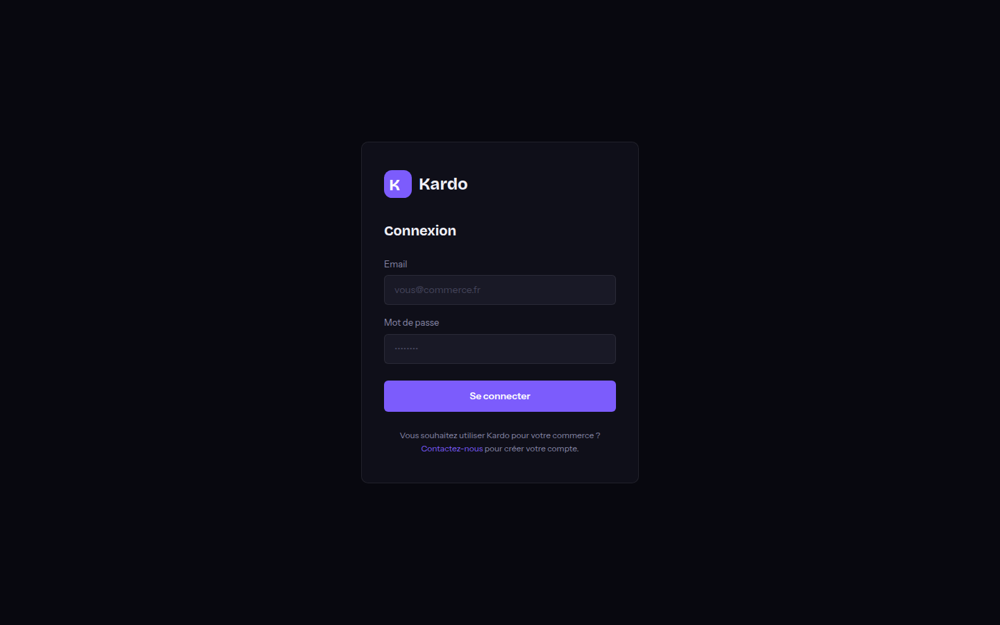
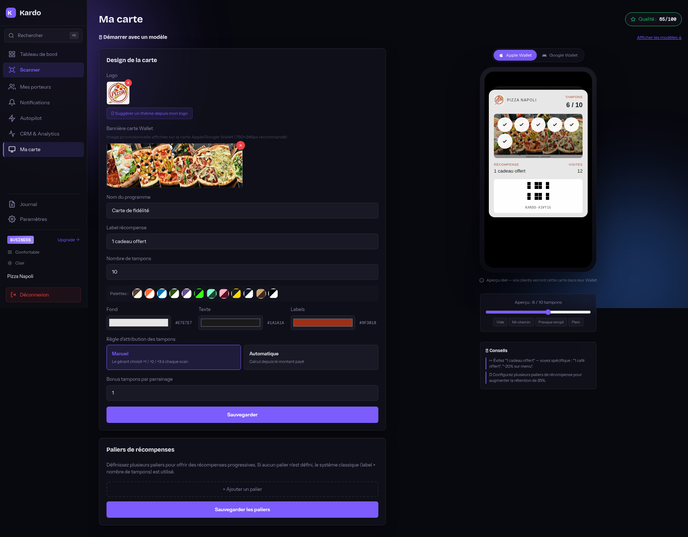
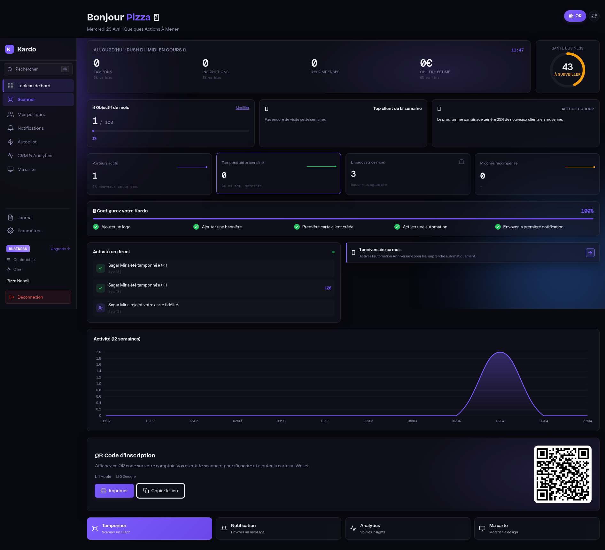
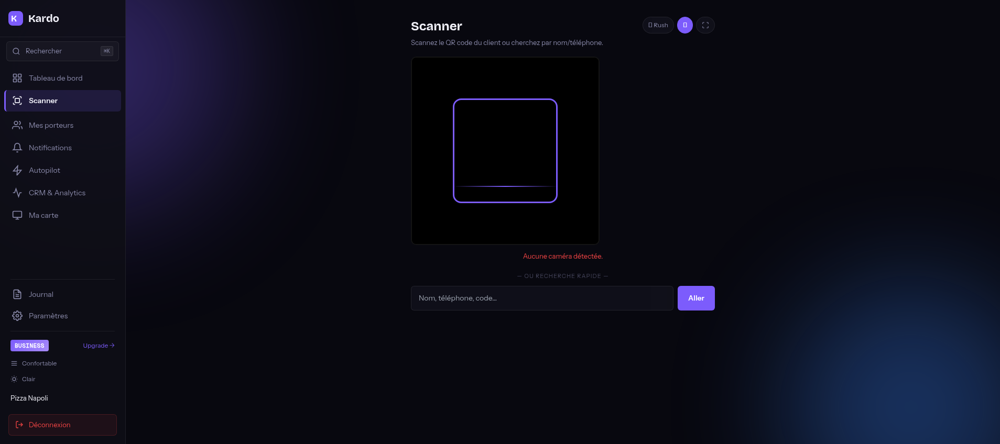
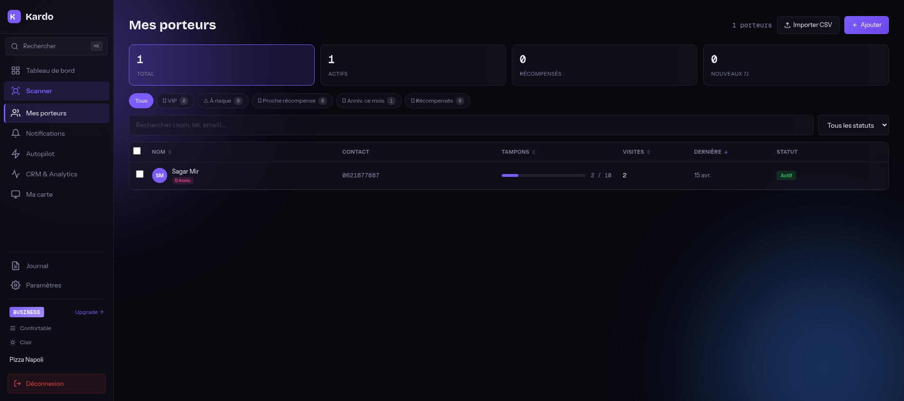
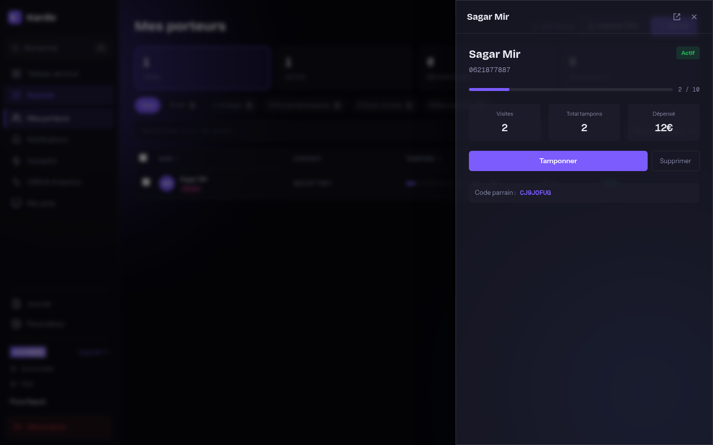
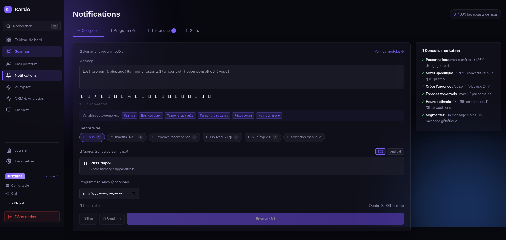
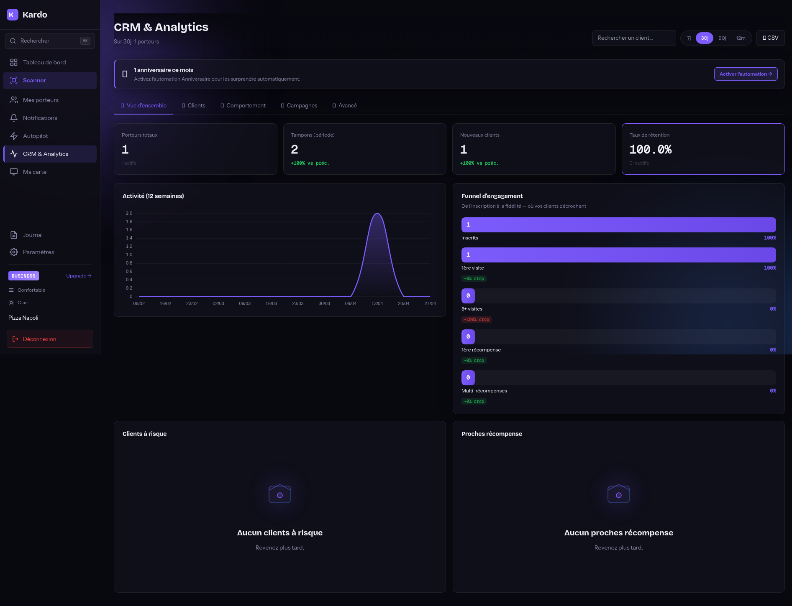
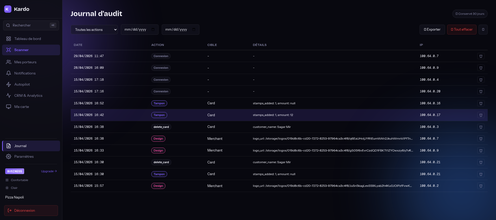
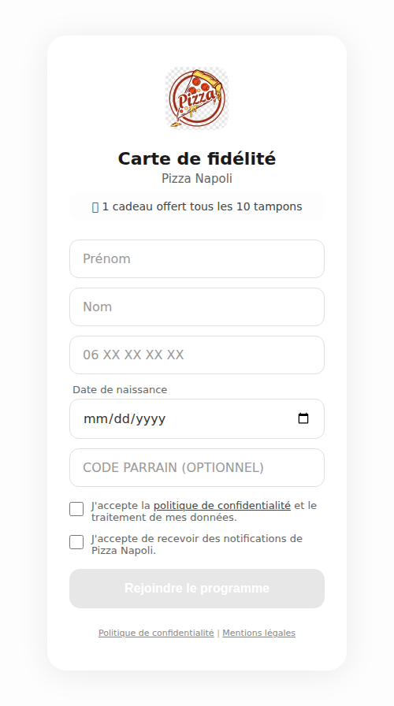

Mot de passe — au moins 8 caractères, une majuscule, une minuscule et un chiffre
Étape 2 — Onboarding (3 étapes)
Après l'inscription, un wizard vous guide :
Type de commerce — restaurant, boulangerie, salon, café, autre
Configuration de la carte — nombre de tampons (ex: 10), label de récompense (ex: "1 café offert")
Couleurs — choix d'une palette parmi 12 ou couleurs custom

Page de connexion Kardo.
Astuce : Vous démarrez automatiquement sur le plan Free (50 clients max, 0 broadcast). Vous pourrez upgrader à tout moment depuis Paramètres → Mon offre.
2. Personnaliser sa carte de fidélité
Allez dans Ma carte (icône palette dans la sidebar). C'est la page la plus importante car elle détermine ce que vos clients voient dans leur Wallet.
Logo et bannière
Logo — image carrée 512×512 px minimum, PNG ou JPG (pas de SVG). Apparaît en haut de la carte Wallet.
Bannière — image rectangulaire 750×246 px recommandée. Apparaît au milieu de la carte derrière les tampons.
Bouton "🎨 Suggérer un thème depuis mon logo" — extrait automatiquement les couleurs dominantes de votre logo et les applique.
Nom du programme et label de récompense
Nom du programme (ex: "Carte de fidélité", "Carte VIP")
Aperçu temps réel sur le côté droit (Apple Wallet / Google Wallet).

Page "Ma carte" — éditeur de design avec aperçu temps réel.
Paliers de récompenses (recommandé)
Au lieu d'une seule récompense au bout de 10 tampons, configurez plusieurs paliers progressifs :
5 tampons → "Café offert"
10 tampons → "Pâtisserie offerte"
15 tampons → "Petit-déjeuner complet"
Cela augmente la rétention de ~35 % selon nos benchmarks.
Règle d'attribution des tampons
Manuel (recommandé) — vous choisissez +1 / +2 / +3 à chaque scan
Automatique — calcul depuis le montant payé (ex: 1 tampon par tranche de 10€)
3. Imprimer et afficher le QR code d'inscription
Sur le Tableau de bord, cliquez sur le bouton QR en haut à droite, ou utilisez la carte "QR Code d'inscription" en bas à droite.
Imprimer — bouton "Imprimer" — format A5 / A6 idéal pour le comptoir
Copier le lien — pour partager sur les réseaux sociaux ou par email
Conseil placement : Mettez le QR à hauteur du regard sur le comptoir, avec un message clair : "Carte de fidélité gratuite — Scannez pour rejoindre 🎁". Plus le QR est grand (10×10 cm minimum), mieux c'est.

Tableau de bord — QR code d'inscription en bas à droite.
4. Tamponner un client
Trois façons de tamponner :
Méthode 1 — Scanner QR (recommandé)
Sidebar → Scanner
Pointez la caméra vers le QR du client (sur sa carte Wallet)
La fiche client apparaît automatiquement
Cliquez sur les cercles tampons pour ajouter +1, +2, +3...
Saisissez le montant (optionnel) et validez
Méthode 2 — Recherche manuelle
Sur la page Scanner, sous le QR, tapez le nom, téléphone ou code parrain du client
Cliquez sur "Aller" pour ouvrir sa fiche
Méthode 3 — Depuis Mes porteurs
Sidebar → Mes porteurs
Trouvez le client dans la liste et cliquez sur "Tamponner +1" directement

Page Scanner avec QR caméra et recherche manuelle.
Mode rush hour : En haut de la page Scanner, activez "🔥 Rush" pendant les coups de feu — l'UI se simplifie pour aller plus vite.
5. Gérer ses porteurs (clients)

Liste des porteurs avec filtres rapides et actions inline.
Appeler / SMS / WhatsApp — actions directes depuis le numéro de téléphone
Import CSV
Bouton "Importer CSV" en haut à droite — pour migrer vos clients existants depuis un autre outil. Format : prenom,nom,telephone,email,date_naissance.

Modale détail client (ouverte depuis la liste).
6. Envoyer une notification (broadcast)
Sidebar → Notifications → onglet "✏️ Composer".
Choisir un destinataire
📢 Tous — broadcast à tous vos porteurs actifs
⚠️ Inactifs (+30j) — uniquement ceux qui ne sont pas venus depuis 30+ jours
🎁 Proches récompense — ceux à 1 tampon du palier
🆕 Nouveaux (7j) — inscrits dans les 7 derniers jours
⭐ VIP (top 20) — vos meilleurs clients
👤 Sélection manuelle — choisissez vous-même les clients
Rédiger le message
Maximum 120 caractères (notification standard)
Insérez des emojis depuis la barre dédiée (20 disponibles)
Utilisez les variables auto-remplies : {{prenom}}, {{tampons}}, {{tampons_restants}}, {{recompense}}, {{commerce}}
Aperçu en temps réel sur la droite (basculez entre iOS et Android)
Envoyer ou programmer
Test — vous l'envoie uniquement à vous (pour vérifier le rendu)
Brouillon — sauvegarde pour plus tard
Programmer — choisissez date + heure d'envoi
Envoyer — envoie immédiatement à tous les destinataires

Composer notification avec emojis, variables et aperçu.
Conseils marketing : Personnalisez avec le prénom (+26 % d'engagement) — Soyez spécifique ("−20 %" convertit 2× plus que "promo") — Heure optimale : 17h-19h en semaine, 11h-13h le week-end — Espacez vos envois (max 1-2 par semaine).
7. Activer l'Autopilot Marketing
L'Autopilot envoie des messages automatiques aux bons clients au bon moment, sans intervention de votre part.
Sidebar → Autopilot. Activez chaque automation avec son toggle, personnalisez le message (avec variables) et sauvegardez.
Automation
À activer en priorité ?
Bienvenue
✅ Oui — message 24h après inscription, premier contact crucial
Première visite
✅ Oui — remerciement après le 1er tampon
Proche récompense
✅ Oui — déclenche la visite finale
Anniversaire
✅ Oui (si vous avez la date de naissance) — taux de retour énorme
Reconquête
⏸️ À tester — attention au cooldown pour ne pas spammer
Relance courte
⏸️ Plutôt pour les commerces à forte fréquence (boulangerie, café)
Milestone
⏸️ Pour les programmes longs (20+ tampons)
Récompense utilisée
⏸️ Optionnel — peut aussi être un sympatique geste oral
A/B testing : Activez la case "🧪 A/B Testing" pour tester deux versions de message et identifier celle qui convertit le mieux.
8. Comprendre les statistiques (CRM)
Sidebar → CRM & Analytics. 5 onglets disponibles.
Onglet
Ce qu'on y trouve
📊 Vue d'ensemble
Clients à risque, proches récompense — actions à mener cette semaine
👥 Clients
Top 10 clients, distribution des tampons
🔥 Comportement
Fréquence de visite, panier moyen, heatmap heures (Pro+)
📣 Campagnes
Performance des broadcasts (Pro+)
🧠 Avancé
Rétention par cohorte, LTV, taux de redemption (Pro+)
Bouton "📥 CSV" pour exporter toute la donnée filtrée (Pro+ uniquement).

CRM & Analytics — vue d'ensemble.
9. Consulter le journal d'audit (Pro+)
Sidebar → Journal. Le journal contient toutes les actions sensibles : tampons, récompenses utilisées, broadcasts, exports, connexions, modifications design.
Pour des raisons de sécurité, il est verrouillé par mot de passe : saisissez votre mot de passe de connexion pour déverrouiller (la session reste ouverte 30 minutes).

Journal d'audit — filtres, export CSV, IP et user agent.
Filtrez par type d'action et / ou plage de dates, exportez en CSV avec le bouton "📥 Exporter".
Conservation : les logs sont conservés 30 jours pour respecter la RGPD (ne pas garder plus longtemps que nécessaire).
10. Côté client — comment ça se passe
Du point de vue de votre client, l'expérience est ultra-simple :
Étape 1 — Scan du QR
Le client scanne le QR avec l'appareil photo de son iPhone ou Android (pas besoin d'app). Une page web s'ouvre avec votre logo, vos couleurs et le formulaire d'inscription.
Étape 2 — Inscription (10 secondes)
Le client remplit :
Prénom + Nom
Numéro de téléphone
Date de naissance
Code parrain (optionnel) — bonus +1 tampon pour lui ET son parrain
Coche les 2 cases RGPD (consentement données + consentement notifications)
Étape 3 — Ajout au Wallet
Après validation, deux boutons apparaissent :
"Ajouter à Apple Wallet" sur iPhone — la carte glisse directement dans le Wallet
"Ajouter à Google Wallet" sur Android — idem côté Google

Page d'inscription côté client (vue mobile).
Au quotidien
Le client présente sa carte Wallet à chaque passage — vous scannez le QR depuis votre dashboard
La carte se met à jour en temps réel (push APNs / Wallet update)
Le client reçoit des notifications natives (pas d'app à installer)
Quand il atteint le palier, une notification "🎉 Vous avez gagné votre récompense !" s'affiche
11. FAQ & dépannage
Le QR code n'est pas reconnu par mon appareil photo
Imprimez le QR plus grand (10×10 cm minimum)
Vérifiez que l'éclairage est suffisant
Demandez au client de tenir son téléphone bien droit
Le client n'a pas reçu sa notification
Vérifiez qu'il a coché "J'accepte de recevoir des notifications" à l'inscription
Sur iPhone, les notifications Wallet doivent être autorisées dans Réglages → Wallet
Sur Android, vérifiez que les notifications de l'app Google Wallet sont actives
J'ai dépassé ma limite de clients (plan Free)
Allez dans Paramètres → Mon offre
Upgrade vers Solo (300 clients), Pro (1 500) ou Business (illimité)
Comment supprimer un client (RGPD)
Mes porteurs → cliquez sur "Voir détail" → bouton "Supprimer"
Le client est anonymisé puis hard-deleted (RGPD compliant)
Côté client : sa carte disparaît automatiquement de son Wallet
Comment changer le design en cours de programme ?
Vous pouvez modifier les couleurs, le logo et la bannière à tout moment
Les cartes existantes seront mises à jour automatiquement (push Wallet) en quelques minutes
Mes clients voient-ils les mêmes statistiques que moi ?
Non. Le client voit uniquement sa propre progression dans son Wallet
Le dashboard CRM est strictement réservé à vous (multi-tenancy stricte)